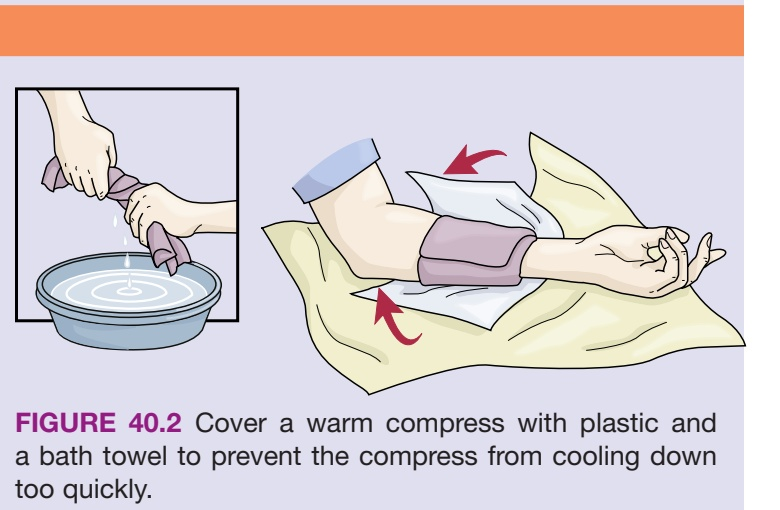
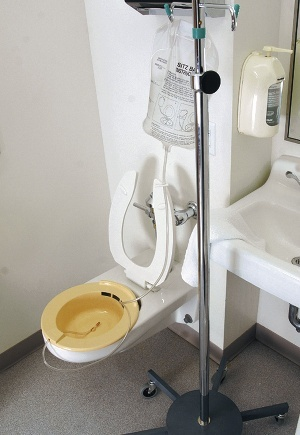
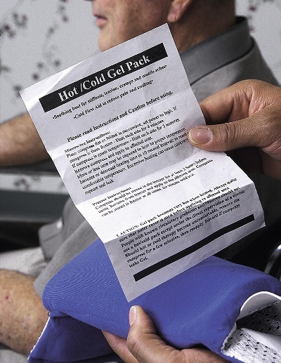
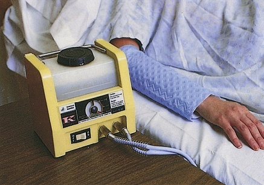
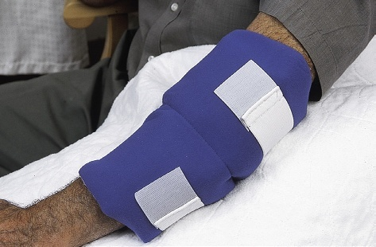
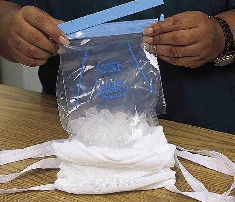

Chapter Opener / 导言专图: Heat and cold applications are valuable interventions used to relieve pain, promote healing, and comfort clients. However, they carry significant risks of thermal injury and must be administered strictly according to care plans. 冷热敷应用是用于缓解疼痛、促进组织愈合及增进患者舒适度的重要护理支持干预手段。然而，冷热疗法潜藏严重的烫伤与冻伤风险，必须严格遵照医嘱与照护计划规范实施。
🎯 LEARNING OBJECTIVES / 学习目标
After reading this chapter, the learner should be able to do the following: / 学习完本章后，学员应当能够达成以下临床能力：
Identify the purposes, effects, and complications of heat and cold applications. 阐明冷热疗法的治疗目的、生理效应及可能诱发的组织并发症。
List clients at risk for complications from heat and cold applications. 列举容易在冷热疗法中发生严重烫伤、冻伤或循环危象的高危人群特征。
List the guidelines for application of heat and cold. 列出安全实施冷热敷操作的核心临床照护指南与观察规范。
Perform the procedures described in this chapter in a safe manner. 在临床支持照护实践中严谨、安全地执行本章所述的各项冷热敷操作规程。
Online Resources: Evolve Resources for Sorrentino's Canadian Textbook for the Support Worker (5th ed.): http://evolve.elsevier.com/Canada/Sorrentino/SupportWorker
p. 960
Physiological Effects of Heat and Cold 冷热疗法的生理效应与机体反应机制
The use of heat and cold as a remedy for ailments has been practised for centuries around the world (see Chapter 45). Today, traditional healers, physicians, nurses, and physiotherapists use a variety of heat and cold applications to reduce tissue swelling (see Chapter 14 for a review of normal body structure and function) and promote healing and comfort. There is also a trend toward the use of heat as part of healing, blending both ancient Indigenous practices and modern practices (see Respecting Diversity: Indigenous Healing Sweats).
Heat and cold have opposite effects on body functions (FIGURE 40.1). Heat increases blood flow by dilating blood vessels in the area being heated (see FIGURE 40.1, B). Cold slows blood flow by constricting blood vessels in the area being cooled (see FIGURE 40.1, C). Both effects can be helpful, but there are risks associated with heat and cold applications, such as severe injuries and a decrease in the ability of that body part to function well. Because of these risks, a support worker should never use heat and cold applications unless they are specified in the client’s care plan, and then only if this duty has been delegated by a nurse.
Aboriginal traditional healing is a broad term that describes the many different healing traditions within the different belief systems in Canada’s Indigenous cultures. This healing has been used by Indigenous people for thousands of years. Healing within these traditions is seen as a journey, and there is as much focus on spiritual and emotional healing as there is on the physical aspects of healing. Health is seen as balance and harmony within the mind, body, and spirit, along with our communities and environments. Illnesses or disease is caused by ignoring sacred, natural laws.
Sweats are used as one type of healing, and this ritual is both a cleansing and healing one. It is most often done in a sweat lodge, which is run by a person (often an elder) who has been trained to conduct the sacred ceremony. Sacred herbs may be added to the smoke and steam during the ceremony.
Any client receiving a heat or cold application should be checked frequently for any signs of problems related to their use (TABLE 40.1). Inspect the skin beneath the application frequently, according to the care plan. It is advisable to check the skin every 5 minutes. As well, the application should not be left on longer than 15 minutes. Not all clients are able to report discomfort, so look for other signs, such as changes in the client’s behaviour. Restlessness, agitation, or other changes in behaviour can indicate pain or discomfort. Stop the application and report to your supervisor immediately if you notice any complications or other signs of problems.
Heat applications are often used for persistent (chronic) conditions to promote healing and provide comfort. Heat can also be used for conditions that are not chronic (e.g., musculoskeletal injuries), but cold applications are usually used initially to reduce swelling. Heat applications relieve pain, relax muscles, promote healing, reduce tissue swelling (after the initial swelling has subsided), and decrease joint stiffness. When heat is applied to the skin, blood vessels in the area dilate (see FIGURE 40.1, B). Blood flow increases, which brings more oxygen and nutrients to the tissues for healing. Excess fluid is removed from the area faster, and the skin becomes red and warm.
Heat applications have complications. High temperatures can cause burns. When heat is applied too long, blood vessels constrict (blood flow decreases). The body acts this way to defend itself against the heat, because body tissues will be burned if the heat continues. Blood vessels constrict, and tissue damage occurs. Clients are at risk for burns, pain, tissue damage, and blisters from heat applications.
When heat is applied to a large area of the body, blood vessels in that area dilate. The amount of blood in the general circulation is reduced because more blood is in the dilated vessels. Less blood flows to the brain, and the client may feel faint, dizzy, weak, or drowsy. These are all signs of circulatory shock! Check the client frequently, according to the care plan.
Comparison Between Heat and Cold Applications 冷敷与热敷疗法全面对比分析矩阵
Feature / 考量维度
Heat Applications / 热敷疗法
Cold Applications / 冷敷疗法
Purposes / 治疗目的与临床指征
For persistent (chronic) conditions:
• Reduces pain of persistent or chronic conditions
• Relaxes muscles
• Promotes healing
• Reduces tissue swelling (after initial swelling has subsided)
• Decreases joint stiffness 适用于慢性顽固性病变：缓解慢性疼痛、松弛肌肉痉挛、加速创伤修复、消除亚急性期组织水肿、改善关节僵直。
For acute injuries / fever:
• Used immediately after an injury (e.g., sprain or fracture)
• Reduces pain
• Prevents swelling and bruising
• Decreases circulation and bleeding
• Cools the body when fever is present 适用于急性外伤与发热：扭伤骨折伤后即刻止血消肿、麻痹末梢神经镇痛、减少局部炎性渗出、物理降温退热。
How Applied / 实施途径与常见敷具
• Warm moist compress
• Warm soak
• Sitz bath
• Commercial pack (e.g., gel pack, aquathermia pad)
• Heating bag (e.g., bean bag or wheat bag) 温热湿敷布、肢体温水浸泡法、盆部坐浴、医用凝胶热敷袋、水循环加热垫、微波加热袋（豆袋/小麦袋）。
• Ice bag, collar, or glove
• Cold compress
• Commercial cold pack (e.g., gel pack) 医用冰袋、冰领圈、冰手套、冷湿敷布、医用凝胶冷敷包。
Desired Effects / 期望达成的生理效应
• Dilates blood vessels
• Increases blood flow
• Relaxes muscles
• Brings more oxygen and nutrients to tissues
• Removes excess fluid faster 舒张小动脉、提升局部灌注流量、缓解肌肉强直、输送组织修复营养素、促进淋巴回流与消肿。
• Constricts blood vessels
• Decreases blood flow
• Decreases oxygen and nutrients to tissues
• Numbs the skin
• Reduces bleeding and bruising 收缩微血管管径、限制局部充血、降低组织代谢耗氧量、麻痹感觉神经末梢止痛、遏制创面活动性渗血。
Frequency of Checks & Timing* / 观察频度与应用时限
• Check the client’s skin every 5 minutes
• Do not apply longer than 15 minutes at a time 每 5 分钟必须直视检视皮肤；单次应用绝对不可超过 15 分钟。
• Check the client’s skin every 5 minutes
• Cold applications are usually applied in 15-minute intervals (i.e., 15 minutes on followed by 15 minutes off) 每 5 分钟必须直接检查皮肤；通常严格遵循“敷 15 分钟、停 15 分钟”的间歇交替循环。
Signs of Problems: Stop & Report at Once / 异常危险警讯（立即停用并汇报）
• Excessive skin redness in the area
• Excessive facial redness
• Blisters
• Complaints of discomfort, pain, or burning (or behaviour changes)
• Signs of skin irritation (redness, rash, itching, burning) 受敷区皮肤极度猩红、面部潮红充血、起水疱、自诉灼痛难忍、烦躁不安或皮疹瘙痒。
• Pale, white, or grey skin
• Cyanosis (bluish skin colour)
• Shivering
• Complaints of discomfort, pain, numbness, or burning (or behaviour changes)
• Signs of skin irritation (redness, rash, itching, burning) 皮肤苍白苍灰、发绀发青、寒战发抖、麻木无知觉或剧烈刺痛、异常皮疹与冷过敏反应。
*Suggested times adapted from Fowler–Kennedy Sports Medicine Clinic, Western University, London, Ontario. Always adhere strictly to the client's care plan and employer policies.
Moist and Dry Heat Applications 湿热与干热的物理特性与临床选择
In dry heat applications, water does not come in contact with skin. The advantages of dry heat are as follows: (1) The application stays at the desired temperature longer. (2) Dry heat does not penetrate as deeply as moist heat, so this type of application may be chosen if the client is very thin or has a medical condition in which a penetrating heat application would be harmful to underlying tissues (such as having a bone screw or plate). However, because water is not used, dry heat needs higher (hotter) temperatures to achieve the desired effect.
📋 BOX 40.1: General Guidelines for Applying Heat or Cold 专栏 40.1：冷热敷应用通用临床操作指引与安全红线
Apply only when (1) ordered by a professional, (2) allowed by your employer, and (3) you are assigned to do so. 仅在满足以下三大前提时方可执行：① 有执业医师/护士医嘱；② 雇主机构规章明确允许支持人员操作；③ 主管护士正式向您下达委派任务。
Know how to use the equipment. 熟练掌握各类加热、控温及冷敷设备的操作要领与安全禁忌。
Before applying moist applications, measure the temperature, according to your employer policy. 实施湿热/湿冷应用前，必须严格依照机构规程精确测量水温（使用水温计或手腕内侧敏感皮试）。
Follow employer policies for safe temperature ranges (TABLE 40.2). 严格遵从机构制定的安全温度阈值区间（见表 40.2）。
Do not apply hot applications above 41.1°C (106°F) because tissue damage can occur. Only a nurse can apply a very hot application. 绝对禁止支持人员使用超过 41.1°C (106°F) 的极高热敷具，否则极易迅速造成深度烫伤。高热或超高热敷贴属于注册护士专属操作范畴。
Ask your supervisor what the temperature of the application should be for each client. 向主管护士确认每位患者的具体设定温度：对高危脆弱患者，热疗采用更低温，冷疗采用更温和（偏高）温度。
Know the precise site of the application. Ask your supervisor to show you the site. 明确冷热敷的具体解剖部位；若有疑义，务必请主管护士在患者体表亲自指认示范。
Before applying a dry heat or cold application, cover it with a flannel or terry-cloth cover, towel, or pillowcase, according to your employer policy. 干热或干冷应用前，严禁直贴裸露皮肤，必须加套绒布套、毛巾套或枕套隔离保护。
Do not leave clients at risk unattended. 高危并发症患者在接受治疗期间，严禁擅自脱岗离开，必须专人守护。
Observe the client’s skin at least every 5 minutes for signs of complications. 至少每 5 分钟直接检查一次患者皮肤，严密观察有无猩红、发白、发绀或起疱。
Observe for changes in the client’s behaviour, which may indicate pain. 密切留意患者表情与行为举止改变（肢体躲闪、呻吟、烦躁），这往往是难以言说剧痛的客观体征。
Remind the client not to change the temperature of the application. 反复叮嘱患者及家属绝对不可自行调高加热档位或擅自加热水。
Prevent chills: cover the client with a blanket or robe, eliminate room drafts, and offer socks. 防范全身畏寒与颤抖：湿热导致体表血管大量扩张会使核心体温散失，应加盖棉毯、关闭门窗防穿堂风并提供保暖袜。
Carefully watch the time: Heat and cold are applied for no longer than 15-minute periods. 严格把控时间：单次冷敷或热敷均严禁超过 15 分钟！
Provide for privacy: properly drape and screen the client. Expose only the body part on which you will apply heat or cold. 维护隐私与尊严：拉上屏风遮帘，严格遮盖非治疗区域，仅暴露施术部位。
Place the call bell within the client’s reach or remain within easy hearing distance. 若经评估允许暂时离开，务必将呼叫铃放置在患者伸手可及之处，或保持在近距离听力范围内。
Follow Standard Practices: wear gloves if you or the client has nonintact skin. 严格遵循标准感染防控规范：若自身双手或患者施术处皮肤存在破损伤口，必须佩戴医用手套。
TABLE 40.2: Heat and Cold Temperature Ranges 表 40.2：临床冷热温度标准分级对照表
Temperature Description / 温度分级描述
Centigrade Range / 摄氏度 (°C)
Fahrenheit Range / 华氏度 (°F)
Clinical Scope / 临床权限与指征
Very hot (超高热)
41.1°C to 46.1°C
106°F to 115°F
Nurse Only / 仅限注册护士操作（极易烫伤）
Hot (高热)
36.6°C to 41.1°C
98°F to 106°F
支持人员常规热敷上限（严密监测）
Warm (温热)
33.8°C to 36.6°C
93°F to 98°F
舒适温和，适合高危体弱长者
Tepid (温凉)
26.6°C to 33.8°C
80°F to 93°F
温凉擦浴物理降温常用区间
Cool (凉爽)
18.3°C to 26.6°C
65°F to 80°F
轻度冷敷与退热
Cold (寒冷)
10.0°C to 18.3°C
50°F to 65°F
急诊止血消肿冰敷温度（防冻伤）
p. 964
⚠️ THINK ABOUT SAFETY / 安全预警思考 Clients at High Risk for Complications From Heat or Cold Applications / 冷热敷高危并发症人群临床评估
Clients with thin, delicate, or fragile skin: These clients include infants, young children, older persons, and fair-skinned people. 皮肤极度薄嫩或脆弱者：包括婴儿、幼儿、高龄老人及皮肤白皙人群，其表皮角质层薄，极低热量即可穿透真皮引起严重水疱或表皮脱落。
Clients who have decreased sensation: Clients who have difficulty sensing heat, cold, or pain may not realize if the application is too hot or too cold and are at risk for skin damage. Examples of situations that may reduce a person’s ability to feel pain include the following:
• Loss of consciousness (意识丧失/昏迷)
• Scarring of the skin (大面积皮肤瘢痕组织，缺乏神经感觉支配)
• Use of some medications (镇静麻醉剂使用)
• Spinal cord injuries (脊髓损伤截瘫/四肢瘫痪)
• Stroke (脑卒中偏瘫或半身感觉障碍)
• Diabetes (糖尿病周围神经病变，四肢末梢痛温觉减退)
• Aging (高龄衰老退行性变导致的感觉迟钝) 痛温觉减退或丧失者：因无法敏锐感知温度过热或过冷，失去防御性退缩反射，面临组织重度坏死的极高风险。
Clients with dementia or confusion: These clients may not recognize pain, or they may not be able to communicate that they are in pain. You need to look for changes in the client’s behaviour, which can signal discomfort. 认知症或意识混乱者：可能无法理解疼痛感觉，或失去语言表达能力；支持人员必须依靠观察面部痛苦表情、呻吟、肢体推拒等行为学改变来识别危险。
Clients with metal implants: Metal conducts heat and cold, so deep tissues can be burned. Pacemakers and joint replacements are made of metal. Do not apply heat in the area of the implant. 体内留置金属植入物者：金属是热与冷的极良导体，热量会迅速在深部金属物上聚焦蓄积，造成深层骨骼、肌肉与神经的深度热灼伤。心脏起搏器、人工关节、金属接骨板螺钉等均为金属制造。严禁在植入物投影区域施加任何形式的热疗！
🏡 FOCUS ON HOME CARE / 聚焦居家照护 Dry Heat Applications, Electric Blankets, and Heating Bags / 干热应用、电热毯与微波加热袋安全规范
Heating Pads, Electric Blankets, and Hot-Water Bottles: Some home care clients may have electric heating pads or hot-water bottles that apply dry heat. These items create serious fire and burn risks, so support workers are usually not permitted to apply electric heating pads or hot-water bottles. If a client asks you to apply an electric heating pad or hot-water bottle, explain that your employer’s policy does not allow you to do this. Find another way to provide warmth to the client—such as giving a blanket or a sweater—and tell your supervisor about the client’s request. If the client insists on using a heating pad or hot-water bottle while you are on duty, the client may need to sign a legal waiver (sometimes called a “Negotiated Risk Agreement”) with your supervisor before you can apply it.
Heating or Bean Bags (Magic Bag): The use of heating bags (or bean bags) has become very popular because they are easy to use and inexpensive. They are often sold under the trade name of Magic Bag. They can even be made at home. These bags are warmed in the microwave, but the length of warming time depends on size, components, and the heating power of the client’s microwave. If the client’s care plan instructs you to apply them, you should always do the following: (1) Heat the bag in the microwave only for the length of time specified in the client’s care plan. (2) Never leave the heating bag unattended while it is heating in the microwave; the contents can spark or even catch on fire! (3) After heating, shake the bag in order to mix the beans inside, as they usually heat unevenly. (4) Never place these bags directly on skin; always wrap in a pad or towel.
Warm compresses are moist heat applications. A compress is a soft pad that is moistened and applied over a body area. Compresses can be hot or cold. A compress is usually made of cloth—for example, a washcloth, small towel, or gauze dressing. Your supervisor will tell you how long to leave the application in place (never more than 15 minutes). As with all heat applications, before applying the compress, test to see if it is too hot by placing a small corner of it on the inner aspect of your wrist. Check the skin every 5 minutes.
Advocate on behalf of the client’s quality of life by promoting: Dignity • Independence • Individualized Care • Preferences • Privacy • Safety (see BOX 1.4, on page 17) 践行品质照护核心价值：尊严守护 • 自立支持 • 个性化护理 • 意愿尊重 • 隐私保护 • 安全第一
PRE-PROCEDURE / 准备阶段
Identify the client, according to employer policy. (This eliminates the possibility of mistaking one client for another.) 依照机构规章严格核对患者双重身份标识。（杜绝张冠李戴差错风险。）
Explain the procedure to the client. 向患者清晰解释操作目的、步骤及预期的温热感觉，缓解其顾虑。
Practise proper hand hygiene. 严格执行七步洗手或手消毒卫生规范。
Collect the following supplies: Basin, Bath thermometer, Small towel / washcloth / gauze squares, Ties / tape / rolled gauze, Bath towel / large towel / clean sheet, Waterproof pad. (By collecting all the necessary equipment beforehand, you will not have to leave your client’s side and can eliminate wasting time and energy in obtaining the forgotten equipment.) 备齐物品：水盆、水温计、小毛巾/毛巾布/无菌纱布块、固定系带/胶布/卷轴绷带、大浴巾/干净被单、防水衬垫。（提前备齐用物可避免中途离开患者身旁，提高照护安全性并节省体力。）
Provide for privacy. 拉闭床帘或关闭房门，充分维护患者个人隐私。
PROCEDURE / 操作步骤
Place the waterproof pad under the body part to be treated. (This keeps the bedding and furniture dry.) 在施术部位下方铺设防水衬垫。（保持床单被褥与家具干燥洁净。）
Fill the basin half full with warm water, as directed by your supervisor. Measure the water temperature. If a water thermometer is not available, test the water by dipping your inner wrist in the water. If the water feels too warm, add some cold water and mix it in well. 按主管护士指定的温度，在水盆内注入半盆温水。用水温计精准测温；若无水温计，将手腕内侧浸入水中感受。若感觉过热，加入冷水彻底混匀校准。
Immerse the compress in the water. 将敷布完全浸润在温水中。
Wring out the compress. The compress should be wet but not dripping. 彻底挤干敷布水分：敷布应保持充分湿润但绝不能滴水。
Apply the compress gently and smoothly to the body part. 动作轻柔平整地将湿热敷布贴敷在目标身体部位。
Cover the compress with a waterproof pad or plastic wrap and then with a clean towel (FIGURE 40.2). Secure the compress in place with tape or gauze. (The plastic wrap and towel keep the compress warm and prevent moisture from escaping. Securing the compress prevents it from shifting.) 在湿热敷布外覆盖一层防水塑料薄膜，再加盖一条干净大毛巾（图 40.2）。使用医用胶带或卷轴纱布平稳固定。（保鲜膜与干毛巾能长效锁温锁水并防止浸湿衣被；固定可防滑脱移位。）
Note the time. (All heat and cold applications must be carefully timed to avoid injury to the client.) 准确记录开始敷贴的时间。（冷热敷必须精确计时以杜绝组织继发热损伤。）
Place the call bell within the client’s reach. 将呼叫铃手柄放置在患者健侧伸手可及之处。
Check the area every 5 minutes. Check for signs of skin problems (see TABLE 40.1). Discontinue the compress if any signs are noticed. Wrap the body part in a towel, and inform your supervisor at once. 严格每 5 分钟揭开边缘检视局部皮肤。一旦发现猩红、水疱或患者主诉灼痛，立即撤除敷布，用干毛巾包裹肢体，并第一时间通报主管护士。

FIGURE 40.2 / 图 40.2: A warm compress is covered with plastic and a towel to keep the compress warm and protect bed linens. 热湿敷布外部加盖塑料隔温层与干燥大毛巾，既能长效保持热敷温度，又能防止水汽蒸发浸湿床单被褥。
Remove the compress after 15 minutes or as directed by your supervisor. Pat dry with a towel. 达到 15 分钟（或护士规定时限）后立即撤除敷布。用干燥软毛巾以“轻拍蘸干”手法吸干皮肤表面水分（切忌粗暴摩擦以免撕伤软化角质）。
POST-PROCEDURE / 操作后处置
Assist the client to a comfortable position. 协助患者调整至舒适安全体位，整理床单衣物。
Place the call bell within reach. 再次确认呼叫铃触手可及。
Clean, disinfect, and return equipment to proper storage, according to employer policy. Discard disposable items. 依照机构感染控制政策，清洗消毒公用水盆，放回规定储存处；一次性敷料妥善投入医疗污物桶。
Remove gloves (if worn) and practise hand hygiene. 脱下手套，严格洗手消毒。
Report and Record: your actions and observations, according to employer policy. Note the time, site, temperature, skin appearance, and client’s response. 规范书写护理记录与口头汇报：详细记录实施时间、确切部位、水温参数、皮肤受热后色泽与完整性，以及患者耐受度与主观反馈。
Warm Soaks 温水浸泡法与安全操作准则
A warm soak is a warm, moist application that involves immersing a body part into heated water to promote circulation and muscle relaxation. The soak lasts 15 minutes. Warm soaks can be used for smaller body parts, such as a hand, lower arm, foot, or lower leg (FIGURE 40.3), or they can be used for larger body areas. A tub is used to soak larger parts (arm, leg, or torso). Maintain the client’s comfort and body alignment during the warm soak.
FIGURE 40.3 / 图 40.3: The warm soak. The client’s lower arm and hand are immersed in a basin of warm water. Notice the towel padding the edge of the basin to protect the arm from skin breakdown. 肢体温水浸泡法：患者的前臂与手完全浸润在适宜水温的水盆中。请特别注意在盆沿处衬垫干燥毛巾，以缓冲硬质塑料对患者手臂局部血管神经与娇嫩皮肤的压迫。
For any type of warm soak, remember to check the water temperature before soaking the body part(s). If the water is too hot, the skin can be burned as soon as it touches the water. If a water thermometer is not available, test the water by dipping your inner wrist in the water. If the water feels too warm, add some cold water and mix it in well. Change the water, as necessary, to correct the temperature. Never add hot water while the body part is in the basin because you can burn the client! Instead, have the client remove the body part from the basin, assisting as necessary. Then you can safely add more hot water. Test the temperature again before assisting the client to put the body part back into the soak.
The sitz bath is also considered to be a warm soak. It involves immersing the perineal and rectal areas in warm or hot water (sitz in German means “seat”). Sitz baths, usually lasting for about 15 minutes, are used after pelvic or rectal trauma or surgery, gender-affirming surgery, and childbirth, and as treatment for hemorrhoids. Sitz baths can also be used to encourage voiding after childbirth, pelvic or rectal trauma, or surgery.
Some agencies use bidets instead of sitz baths. With bidets, the perineal and rectal areas are not immersed, but warm water gently flows over the area. Bidets have many of the beneficial effects of sitz baths. A sitz tub is a built-in fixture with a deep seat. The client sits in a seat filled with water (FIGURE 40.4), with the feet resting flat on the floor. Do not use an ordinary bathtub for a sitz bath, as immersing the legs and feet decreases the effectiveness of the procedure.
FIGURE 40.4 / 图 40.4: The built-in sitz tub. A blanket covers the client’s legs to keep him warm and to respect his need for privacy. 专用固定式深坐浴盆。患者双腿覆盖棉毯保暖，既维护患者隐私与尊严，又防范受寒。

FIGURE 40.5 / 图 40.5: A disposable sitz bath with water bag, tubing, and clamp. It fits securely onto a standard toilet seat. 马桶式一次性便携坐浴盆：配备输液式补水袋、导管与止水夹，可牢固卡装在标准马桶圈上。
The disposable plastic sitz bath fits onto the toilet seat (FIGURE 40.5). Plastic tubing runs from the bowl of the sitz bath to a water bag, and a plastic clamp closes the tubing. The sitz bath is filled with water at an appropriate temperature. (Check with your supervisor to determine a safe temperature.) The water bag is filled with warmer water. As the water in the sitz bath cools, the tubing is unclamped to allow the warmer water from the bag to flow into the sitz bath.
As blood flow to other body parts is reduced and blood flow to the perineal and rectal areas increases, the client may feel chilled. Cover the client’s shoulders and knees for warmth. Reduced blood flow may also make the client feel faint, dizzy, weak, or drowsy. Check the client every 5 minutes for these signs. Stay in the room if it is not safe to leave the client alone. Allow as much privacy as possible. If it is safe to leave, place the call bell within the client’s reach, or remain within easy hearing distance.
A pack is a treatment that involves wrapping a body part with a wet or dry application. The application can be either warm or cold. Single-use (disposable) or reusable commercial packs are available (FIGURE 40.6). Some, such as some commercial gel packs, can be used alternately for heat and cold. The manufacturer’s instructions will tell you how to activate the heat or cold.
敷包（Pack）是指使用湿性或干性敷具将特定解剖部位包裹起来的治疗方式，兼有温热包与冷冻包两类。临床上广泛使用一次性丢弃型或可重复利用的商业成品敷包（图 40.6）。其中高分子凝胶袋（Commercial Gel Pack）应用极为灵活，既可加热作为热敷包，亦可置入冷柜冰镇作为冷敷袋。使用前必须严格研读生产厂家的激活与温控指南。

FIGURE 40.6 / 图 40.6: A commercial gel pack. It can be heated in water or frozen in a freezer for hot or cold therapy. 医用商业高分子凝胶包：可水浴加热或置入冰箱冷冻，实现冷热双重物理疗法。

FIGURE 40.7 / 图 40.7: An aquathermia pad. Heated or cooled water flows through channels in the pad from a bedside control unit. 水循环加热垫（Aquathermia pad）：床旁控温主机通过软管循环泵送恒温蒸馏水，在垫内微管道中持续流动。
An aquathermia pad is a waterproof plastic or rubber pad that can be applied to areas of muscle sprain, edema, or mild inflammation in the place of a heating pad or cold pack (FIGURE 40.7). The pad contains channels through which heated or cooled water flows. The device is connected by hoses to a bedside control unit that contains a temperature regulator, a motor for circulating the water, and a reservoir of distilled water. Some warm packs are put in boiling water for a few minutes or warmed in a microwave oven. Other types of packs require kneading or squeezing in order to activate them to heat up. Reusable packs should never be placed directly on skin but should be covered with a clean, dry cloth, such as a dishcloth or towel.
Advocate on behalf of the client’s quality of life by promoting: Dignity • Independence • Individualized Care • Preferences • Privacy • Safety (see BOX 1.4, on page 17) 践行品质照护核心价值：尊严守护 • 自立支持 • 个性化护理 • 意愿尊重 • 隐私保护 • 安全第一
PRE-PROCEDURE / 准备阶段
Identify the client according to employer policy. (This eliminates the possibility of mistaking one client for another.) 依照机构规章严格核对患者双重身份标识。（杜绝张冠李戴差错风险。）
Explain the procedure to the client. 向患者清晰解释浸泡目的与步骤，告知水温温和舒适。
Practise proper hand hygiene. 严格执行七步洗手或手部消毒规范。
Collect the following supplies: Water basin or an arm or foot bath, Bath thermometer, Bath blanket / large towel / clean sheet, Waterproof pad. (By collecting all the necessary equipment beforehand, you will not have to leave your client’s side and can eliminate wasting time and energy in obtaining the forgotten equipment.) 备齐物品：水盆或专用手足浸泡槽、水温计、沐浴毯/大毛巾/干净被单、防水衬垫。（提前备齐全部用物可避免中途脱岗，确保患者全程受监护并节省体力。）
Provide for privacy. 拉闭隔帘或关门，确保患者隐私。
PROCEDURE / 操作步骤
Position the client for treatment. (The client will be more likely to participate if comfortable.) 协助患者采取舒适体位。（身体舒适能极大提升患者的配合度与治疗耐受性。）
Place the call bell within reach.* (This provides an easy, safe way for the client to contact the staff if necessary.) 将呼叫铃放置在患者伸手可及之处。*（确保患者有紧急情况时能随时呼叫求助。）
Place a waterproof pad under the area to be treated. (This keeps the bedding dry.) 在施术区域与水盆下方铺垫防水衬垫。（保持床单家具干燥。）
Fill the water basin half full with warm water, as directed by your supervisor. Measure the water temperature. If a water thermometer is not available, test the water by dipping your inner wrist in the water. If the water feels too warm, add some cold water and mix it in well. (It is important to ensure that the water is not too hot so as to avoid causing thermal injuries to the client.) 遵护士指示在水盆内注入半盆温水。用水温计精准测温；若无水温计，用手腕内侧敏感皮试测水温。若偏热，加冷水彻底搅匀。（严控水温以杜绝突发性组织热烫伤。）
Place the client’s body part into the water. Pad the edge of the basin with a towel. Note the time. (It is important to time all heat and cold treatments to avoid thermal injuries to the client.) 平稳协助患者将肢体浸入温水中。在水盆坚硬边缘处衬垫干燥软毛巾缓冲。记录开始时间。（严格计时是防范热损伤的核心铁律。）
Cover the client with a bath blanket, large towel, or clean sheet for extra warmth. (This ensures client warmth and privacy.) 为患者加盖浴毯或大毛巾。（确保保暖防寒并维护身体尊严。）
Check the area every 5 minutes. Check for redness and complaints of pain, discomfort, or numbness. Discontinue the soak if any of these signs are noticed. Wrap the body part in a towel, and inform your supervisor at once. (This reduces the risk for client injury.) 严格每 5 分钟直视观察一次肢体皮肤。若出现皮肤过度猩红、或患者诉说灼痛、不适或麻木，立即中止浸泡！将肢体自水中移出并用干燥软毛巾包裹，立即通报主管护士。
Check water temperature every 5 minutes. Change the water, as necessary. Wrap the body part in a towel while changing the water. (This prevents chilling of the client.) 每 5 分钟复测水温。如需加温换水，务必先将患者肢体移出并用毛巾包裹保暖，重新配好温水后再协助浸入。（防范受寒并杜绝加水烫伤。）
Remove the body part from the water after 15 minutes. Pat dry. (Drying the skin with a patting motion is gentler than rubbing it with the towel.) 浸泡满 15 分钟后移出肢体。用毛巾轻拍蘸干水分。（轻拍蘸干手法比粗暴摩擦更温和，能保护浸泡软化的脆弱表皮。）
POST-PROCEDURE / 操作后处置
Follow steps 16 through 20 in the procedure Applying Warm Compresses, on page 966. Report and Record your actions and observations, according to employer policy. (Actions, observations, and basic assessments are recorded and reported for legal reasons and to keep the rest of the health care team informed.) 依次执行热湿敷规程中的步骤 16 至 20（协助患者体位复原、呼叫铃归位、清洗消毒用具、脱手套洗手）。依照机构政策详尽汇报并记录操作时间、水温、皮肤情况及患者反应。（详尽书写护理记录兼具法律举证与多学科团队信息沟通价值。）
*Steps marked with an asterisk may not apply in community settings. / 标有星号的步骤在居家社区护理环境中可作相应调整。
p. 969

FIGURE 40.8 / 图 40.8: A warm pack is secured with Velcro straps to keep it from slipping off the client’s arm or leg. 热敷袋配有魔术贴搭扣带，可牢固环抱固定在患者手臂或腿部，有效防止活动时滑脱移位。
Cold Applications 冷敷疗法的适应证与生物学效应
Cold applications are often used to treat sprains, fractures, and fever (BOX 40.2). They reduce pain, prevent swelling, and decrease circulation and bleeding. Cold applications also cool the body when fever is present. Cold has the opposite effect of heat on body functions. When cold is applied to the skin, blood vessels constrict (see FIGURE 40.1, C, on page 960), resulting in decreased blood flow to the area and less oxygen and fewer nutrients being carried to the tissues. Cold applications are useful immediately after an injury. The decreased circulation reduces the amount of bleeding, bruising, and swelling, and cold has a numbing effect on the skin, which helps reduce or relieve pain in the affected part.
Cold applications should never be used on old injuries, as they can actually cause tissue damage, since the tissue over the old injury may be less sensitive to the cold. This tissue damage is called frostbite—a medical condition in which damage is caused to skin and other tissues due to extreme cold. Signs of frostbite include blisters; pale, white, or grey skin; cyanosis; shivering; numbness; pain; and burning. Complications of cold applications include pain, burns, blisters, and cyanosis. Burns and blisters tend to occur from applications being in direct contact with skin. It is your responsibility to check clients every 5 minutes, or more frequently for those who are at high risk for complications (see the Think About Safety: Clients at High Risk box, on page 964).
🧊 BOX 40.2: Care of Recent Injuries: The RICE Protocol 专栏 40.2：急性闭合性运动软组织创伤黄金处置法则：RICE 方案
RICE is an acronym for Rest, Ice, Compression, and Elevate—a proven method for managing acute musculoskeletal injuries: / RICE 是急救医学处理急性骨骼肌肉与韧带扭伤的国际公认标准缩写：
R — Rest (制动休息): The injured part should be rested to prevent further injury and allow healing to begin. 立即停止患肢一切负重与运动，局部严格制动休息，以防撕裂范围扩大并启动早期修复。
I — Ice (冰敷冷疗): Cold applications constrict blood vessels, reduce bleeding, swelling, and pain. Cold is applied in 15-minute intervals. 伤后即刻冷敷以收缩血管、减少出血肿胀并阻滞疼痛传导。严格遵循单次 15 分钟应用原则。
C — Compression (加压包扎): A compression bandage (tensor bandage) provides gentle pressure to minimize fluid accumulation and internal bleeding. Check circulation frequently. 使用医用弹力绷带（Tensor bandage）由远心端向近心端施加均匀梯度压力，限制组织间隙渗液积聚。须高频监测远端动脉搏动、皮温与毛细血管充盈时间，严防包扎过紧导致肢端缺血坏死。
E — Elevate (抬高患肢): Elevating the injured part above the level of the heart uses gravity to drain fluid and reduce swelling. 利用枕头将患肢稳妥垫高，使其高于心脏水平位置，借助重力促进静脉血与淋巴液回流通畅，迅速减轻远端肢体充血与水肿。
p. 970
Moist and Dry Cold Applications 湿冷与干冷疗法分类与临床应用原则
Like heat applications, cold applications can be moist or dry. In dry cold applications, water does not touch the skin. Examples of dry cold applications include ice bags, ice collars, ice gloves, and commercial cold packs. A moist cold application, such as a cold compress, involves water being in direct contact with the skin. Moist cold penetrates deeper and faster than dry cold, making it more effective in reducing swelling and acute pain quickly.
In general, cold applications should be applied and removed in 15-minute intervals (i.e., 15 minutes on followed by 15 minutes off). When cold is applied for longer than 15 minutes, the body reacts with vasodilation—the blood vessels dilate in an attempt to protect the tissues from frostbite and freezing! This compensatory reaction defeats the purpose of applying cold and can cause severe complications, including tissue death.
Ice bags, collars, and gloves are dry cold applications. Commercial cold packs may be single-use disposable or reusable. Some commercial gel packs can be stored in the freezer ready for use. Always cover dry cold applications with a flannel cover, towel, or pillowcase before applying them to the client’s skin. Direct contact between ice and bare skin can freeze the epidermis within seconds! Inspect the skin every 5 minutes throughout the application.
Applying an Ice Bag, Ice Collar, or Ice Glove 操作规程：应用冰袋、冰领圈或冰手套（第一部分）
Advocate on behalf of the client’s quality of life by promoting: Dignity • Independence • Individualized Care • Preferences • Privacy • Safety (see BOX 1.4, on page 17) 践行品质照护核心价值：尊严守护 • 自立支持 • 个性化护理 • 意愿尊重 • 隐私保护 • 安全第一
PRE-PROCEDURE / 准备阶段
Identify the client, according to employer policy. 核对患者身份标识，杜绝差错。
Explain the procedure to the client. (Explain that the ice application will feel cold initially and may cause mild stinging before numbing occurs.) 向患者解释操作规程与冷感（告知初敷时会感寒冷或微刺痛，随后局部神经麻痹即可有效镇痛）。
Practise proper hand hygiene. 执行七步洗手或手消毒。
Collect the following supplies: Ice bag, collar, or glove; Ice chips or small ice cubes; Flannel cover, towel, or pillowcase; Large spoon or ice scoop; Paper towels; Waterproof pad. 备齐物品：医用橡胶冰袋/冰领/冰手套、碎冰或小冰块、法兰绒布套/毛巾/枕套、冰勺、纸巾、防水衬垫。
Provide for privacy. 拉闭隔帘，维护患者隐私与体面。
PROCEDURE / 操作步骤
Place the waterproof pad under the body part to be treated. 在施术部位下方铺设防水衬垫以防冷凝水浸湿床褥。
Fill the ice bag one-half to two-thirds full with small ice cubes or crushed ice. (Small pieces of ice allow the bag to mould comfortably to the client’s body shape.) 使用冰勺向冰袋内装入小碎冰块至 1/2 到 2/3 满。（碎冰便于冰袋柔软贴合患者身体起伏轮廓。）
Flatten the bag against a firm, flat surface to expel the excess air, and securely fasten or screw on the cap (FIGURE 40.9). (Removing air makes the bag more flexible and prevents thermal insulation from trapped air.) 将冰袋平放在平整台面上，轻轻挤压排净内部空气，随后严密旋紧密封盖（图 40.9）。（排出空气可使冰袋更加柔顺易塑形，并杜绝空气层绝热阻碍冷传导。）
Wipe the outside of the bag dry with paper towels. Check for leaks. 用纸巾将冰袋外壁彻底擦干，倒置检查有无渗漏滴水。
Place the ice bag into the flannel cover or wrap it securely in a towel. (Never place an uncovered ice bag directly on bare skin.) 将冰袋装入法兰绒保护套中或用干毛巾严密包裹。（绝对禁止将未包裹冰袋直贴皮肤！）
Place the covered ice bag gently on the treatment site. 将包裹好的冰袋轻柔平稳地放置在患处。
Note the time. 准确记录开始冷敷的时间。
Place the call bell within the client’s reach. 将呼叫铃手柄放置在患者触手可及之处。
Check the skin under the application every 5 minutes. Check for signs of frostbite: pale, white, grey, or cyanotic skin, shivering, or complaints of numbness or burning pain. 严格每 5 分钟掀开布套直接检视皮肤。严密观察有无苍白、灰白、青紫发绀、寒战颤抖、麻木无感觉或异常刺痛。
If any abnormal signs are observed, remove the ice bag immediately, wrap the part in a blanket, and notify your supervisor at once! 一旦发现任何异常冻伤体征，立即撤去冰袋，用毛毯包裹肢体保暖，并第一时间向主管护士报告！
Remove the ice bag after 15 minutes (or as ordered). 冷敷满 15 分钟后必须准时撤离冰袋。
Pat the skin dry with a towel. 用软毛巾轻拍吸干皮肤表面冷凝水分。

FIGURE 40.9 / 图 40.9: The ice bag is filled one-half to two-thirds full with small ice cubes, flattened to expel air, and securely capped. 橡胶冰袋装入小碎冰至 1/2 至 2/3 满，平放压出袋内空气后旋紧密封盖，确保柔软贴合体表曲线。
p. 972
PROCEDURE: APPLYING ICE BAG (CONT’D) / 冰袋操作后处置与总结
Assist the client to a comfortable position. 协助患者恢复舒适安全的生理卧位。
Place the call bell within reach. 呼叫铃置于患者手中。
Empty the ice bag, discard water and ice, clean and disinfect according to policy, and allow to air dry upside down before storage. 排空冰袋内融冰与积水，依规程清洗消毒，倒挂风干后妥善收纳储存。
Remove gloves (if worn) and practise hand hygiene. 脱下手套，严格执行手卫生消毒。
Report and Record your actions and observations: site, time applied and removed, skin condition, and client’s response. 详尽记录并汇报：敷冰部位、敷贴与撤除确切时间、局部皮肤色泽完整性、患者耐受情况及异常主诉。
PROCEDURE / 临床规范操作规程
Applying Cold Compresses 操作规程：冷湿敷法操作规程（第一部分）
Advocate on behalf of the client’s quality of life by promoting: Dignity • Independence • Individualized Care • Preferences • Privacy • Safety (see BOX 1.4, on page 17) 践行品质照护核心价值：尊严守护 • 自立支持 • 个性化护理 • 意愿尊重 • 隐私保护 • 安全第一
PRE-PROCEDURE / 准备阶段
Identify the client according to employer policy. 依规核对患者双重身份。
Explain the procedure to the client. 向患者清晰告知冷湿敷目的与过程。
Practise proper hand hygiene. 洗手消毒。
Collect supplies: Basin filled half full with cold water and ice cubes; Bath thermometer; Compress cloths (washcloths, small towels, or gauze pads); Waterproof pad; Bath towel or clean sheet. 备齐物品：盛有冷水与适量冰块的水盆、水温计、敷布（毛巾/小方巾/无菌纱布）、防水垫、大浴巾或干净被单。
Provide for privacy. 遮蔽门帘保护隐私。
PROCEDURE / 操作步骤
Place the waterproof pad under the body part to be treated. 在目标部位下铺好防水保护垫。
Fill the basin half full with cold water and add ice cubes, as directed. 按医嘱要求在水盆中注入冷水并投入冰块。
Measure the water temperature with a thermometer. Follow your employer policy for safe temperature ranges (TABLE 40.2). 用水温计精确测量冷水温度，严格保持在机构规定的安全冷敷温度区间（见表 40.2）。
Wring out a compress. The compress should be wet but not dripping. 将敷布自冰水中捞出并充分拧干：敷布应冰润湿透但绝不可滴水。
Apply the compress gently and smoothly to the body part. 动作轻柔平贴在患处皮肤上。
Cover the compress with a waterproof pad or plastic wrap and then with a clean towel. Secure gently in place. 在冷湿敷布外覆盖防水隔膜与干毛巾以减缓体温对敷布的加热速度，并防止弄湿衣被。
Note the time. 准确记下开始冷敷的时间。
Place the call bell within the client’s reach. 呼叫铃放置在患者健侧伸手可及处。
Check the skin under the application every 5 minutes. Check for signs of frostbite (pale, white, grey, or cyanotic skin, numbness, or pain). Stop the compress at once if noticed! 每 5 分钟掀开直接检查皮肤一次。严密观察有无冻伤前兆（苍白、灰白、青紫、感觉麻木或刺痛）。一旦发现立即停用并通报护士！
Check the compress temperature frequently. Because moist compresses warm up quickly from body heat, change or re-dip the compress into ice water every few minutes, as necessary, to maintain the desired cold temperature. 高频复核敷布冷度：由于体温会迅速传导加温湿敷布，应每隔数分钟按需将敷布重新浸入冰水中拧干更换，以维持恒定的冷疗刺激。
Remove the compress after 15 minutes (or as ordered). Pat the skin dry with a towel. 达到 15 分钟严格撤离敷布。用软毛巾轻拍蘸干局部皮肤。
POST-PROCEDURE / 操作后处置
Follow post-procedure steps: Assist client to comfort, place call bell, clean and disinfect basin, discard single-use items, remove gloves, practise hand hygiene, and Report and Record site, duration, temperature, skin appearance, and client tolerance. 执行标准后置流程：协助体位舒适、呼叫铃归位、清洁消毒洗水盆、废弃物合规处置、脱手套洗手，并在护理记录中完整记录冷敷部位、持续时间、水温、皮肤色泽及患者主诉耐受性。
p. 974
CHAPTER REVIEW / 本章学术复习与临床反思
Key Points & Review Questions 核心要点回顾与原版官方自测试题
📌 KEY POINTS / 本章临床核心考点精要
Prerequisites for Performing Procedures: Before performing heat or cold procedures, ensure that: (1) provincial/territorial laws and employer policies permit you to do so, (2) the procedure is in your job description, (3) you have necessary training, (4) you understand the equipment, and (5) you have reviewed the plan with a nurse. 操作准入五要素：省/领地法规与机构规章许可、属于支持人员岗位职责、受过规范技能培训、熟练掌握器材、与主管护士核准委派照护计划。
Opposite Biological Effects: Heat dilates blood vessels, increasing blood flow to promote healing and comfort; cold constricts blood vessels, slowing blood flow to reduce bleeding and swelling. 冷热对立生理效应：热疗舒张血管、激增血流以促愈镇痛；冷疗收缩血管、减缓血流以止血消肿。
Severe Injury Risks: Both heat and cold can cause severe injuries, including burns, frostbite, tissue necrosis, and reduced functional ability of the affected body part. 严重创伤风险：误用滥用可引起三度烫伤、重度冻伤、组织不可逆坏死以及器官功能持久退化。
Delegation Mandate: Because of these risks, heat and cold applications must be specified in the care plan and delegated by a nurse. 严格委派制度：严禁自行擅用，必须依照护计划且经护士正式临床委派方可实施。
Timing & Monitoring Redlines: Inspect the skin beneath the application every 5 minutes. Never leave heat or cold applications on for longer than 15 minutes at a time. 两大安全红线：每 5 分钟必须直接检查皮肤一次；单次应用严格限制在 15 分钟以内。
Nonverbal Pain Signals: Not all clients can verbalize discomfort; closely observe behaviour changes such as restlessness, agitation, or grimacing. 非言语疼痛征象：警惕烦躁、易怒、躲闪等行为学改变，其往往是组织热冻损伤的关键求救警讯。
Moist vs Dry Heat/Cold: Water conducts thermal energy rapidly; moist therapies have a greater and faster penetration effect than dry therapies. 湿透胜于干透：水是热与冷的极良传导介质，湿性疗法的渗透速度与深度显著超越干性疗法。
High-Risk Client Populations: Highest risk includes: (1) thin/delicate skin, (2) decreased sensation, (3) dementia/confusion, and (4) internal metal implants. 四大并发症高危人群：薄嫩脆弱皮肤、感觉减退丧失、认知症意识障碍、体内金属植入物（深层灼伤红线）。
💡 CRITICAL THINKING IN PRACTICE / 临床批判性思维实战案例
Clinical Scenario: You have been instructed to remove Mr. Velez’s hot pack. He says: “My knee feels much better with that on it. Can I leave it on longer?”
• What do you do?
• Is it safe, or are there risks to leaving the application in place? Explain.
• Are you allowed to apply or remove heat or cold applications in all settings? Explain why or why not.
Clinical Decision Analysis / 临床处置精解：
① 坚决礼貌撤除：必须温和而坚定地向患者解释必须准时撤除热敷包。切不可顺从患者意愿超时敷贴。
② 病理生理风险解释：热敷超过 15 分钟，局部血管为自我防御会发生反射性痉挛收缩，血液循环骤降，局部丧失散热通道，极易迅速造成深度烫伤与组织坏死；同时若伴随慢性关节炎急性渗出，过度充血反而加重关节水肿。
③ 执业范围约束：支持人员必须在雇主政策允许、护士正式委派且严格依照护计划的前提下执行，严禁擅自增减时间或私自应用。
REVIEW QUESTIONS / 原版课后复习思考题 (Questions 1 to 6)
Circle the BEST answer. Answers and complete rationales are available in the dedicated practice sheet.
1. Which of the following is true about heat application?
1. 关于热敷疗法，下列哪项表述是正确的？
A. It will decrease the blood flow. (它会减少局部血流量)
B. It will cause an increase in muscle spasm. (它会加重肌肉痉挛)
C. It will treat recent sprains. (它用于治疗急性新发扭伤) D. It can reduce joint stiffness. (它能有效缓解并减轻关节僵硬)
2. Which of the following is the greatest threat from heat applications?
2. 热敷治疗中最主要、最危险的威胁是下列哪项？
A. Infection (感染) B. Burns (严重烫伤/组织热烧伤)
C. Chilling (全身发冷畏寒)
D. Pressure injuries (压力性损伤/压疮)
3. Who has the greatest risk for complications from a heat application?
3. 下列哪位患者发生热敷并发症的风险最高？
A. A 10-year-old boy (一名 10 岁男童)
B. A teenager (一名青少年)
C. A 40-year-old woman (一名 40 岁女性) D. An older person with diabetes (一名伴有糖尿病的高龄老年患者)
4. When checking the skin under a heat application, which of the following should you report?
4. 检查热敷部位下方皮肤时，发现下列哪种情况应当立即向护士汇报？
A. Rash (皮疹、红斑或水疱征象)
B. Warm skin (皮肤温热)
C. Relaxed muscles (肌肉放松)
D. Client sleeping (患者安静入睡)
5. The temperature of a hot application is usually between:
5. 临床“高热（Hot）”热敷的常规标准温度区间通常介于：
A. 26.6°C and 33.8°C (80°F to 93°F)
B. 33.8°C and 36.6°C (93°F to 98°F) C. 36.6°C and 41.1°C (98°F to 106°F)
D. 41.1°C and 46.1°C (106°F to 115°F)
6. Which of these statements about moist heat applications is true?
6. 关于湿热敷应用，下列哪项陈述是完全正确的？
A. Water is never in contact with the skin. (水绝不直接接触皮肤) B. Moist heat has a greater and faster effect than dry heat. (湿热的组织渗透效应显著大于且快于干热)
C. Dry heat penetrates deeper than moist heat. (干热比湿热渗透更深)
D. Moist heat applications are more dangerous than moist cold applications. (湿热敷比湿冷敷更危险)
7. A client has a warm compress. Which of the following is true?
7. 某患者正在接受温热湿敷。下列哪项操作陈述是正确的？
A. The warm compress is a dry heat application. (热湿敷属于干热疗法)
B. The compress is applied no longer than 5 minutes. (热敷单次最长不可超过 5 分钟) C. The area is checked every 5 minutes. (热敷部位必须严格每 5 分钟检查一次)
D. The compress should never be covered. (热敷布绝不能在外部覆盖任何保护层)
8. Which of these statements about sitz baths is true?
8. 关于坐浴疗法（Sitz bath），下列哪项叙述是正确的？
A. The foot and leg areas are immersed in warm or hot water for 15 to 20 minutes. (双脚和双腿浸入温热水中 15 至 20 分钟) B. Weakness and fainting can occur. (患者可能因脑供血不足而出现虚脱无力与眩晕晕厥)
C. Sitz baths should never be used on men. (男性患者绝对禁止坐浴)
D. The sitz bath lasts 1 to 2 hours. (坐浴治疗持续 1 至 2 小时)
9. Cold applications:
9. 冷敷疗法的核心作用机制与临床效果包括：
A. Reduce pain, prevent swelling, and decrease circulation (减轻疼痛、遏制肿胀并降低局部血液循环)
B. Dilate blood vessels (显著舒张微血管)
C. Prevent the spread of microbes (直接杀灭并阻止微生物传播)
D. Are warmed in a microwave oven (在微波炉中加热使用)
10. Which of the following is a complication of a cold application?
10. 下列哪项是冷疗误用所引发的严重器质性并发症？
A. Fever (体温异常升高/发热)
B. Excessive thirst (极度口渴烦渴)
C. Infection (急性化脓性感染) D. Frostbite (局部深浅组织冻伤与组织坏死)
11. Before applying an ice bag:
11. 在将冰袋敷于患者身体前，必须完成的关键操作是：
A. Prepare the bag by running it under hot water. (将冰袋置于热水中冲洗)
B. Measure the temperature of the bag. (用体温计测量冰袋表面温度) C. Place the bag in a cover. (将冰袋装入法兰绒保护套或用干毛巾包裹)
D. Ask the client to void. (要求患者必须先排空膀胱)
12. Moist cold compresses are left in place no longer than:
12. 冷湿敷布在体表留置敷贴的时间绝对不可超过：
A. 15 minutes (单次严禁超过 15 分钟)
B. 30 minutes (30 分钟)
C. 45 minutes (45 分钟)
D. 60 minutes (60 分钟)